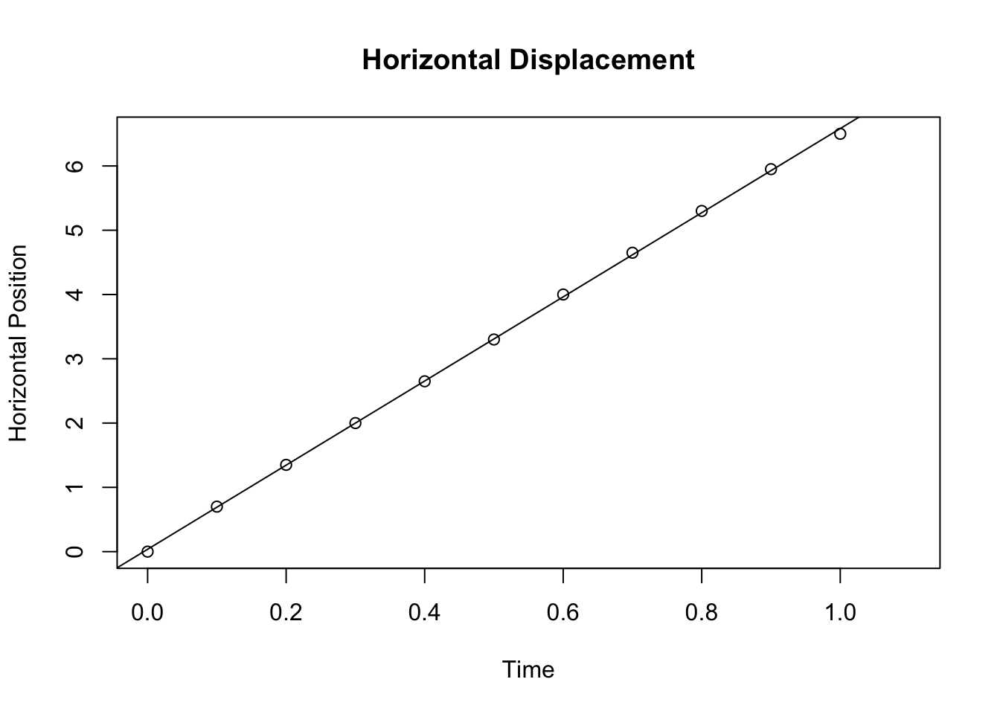
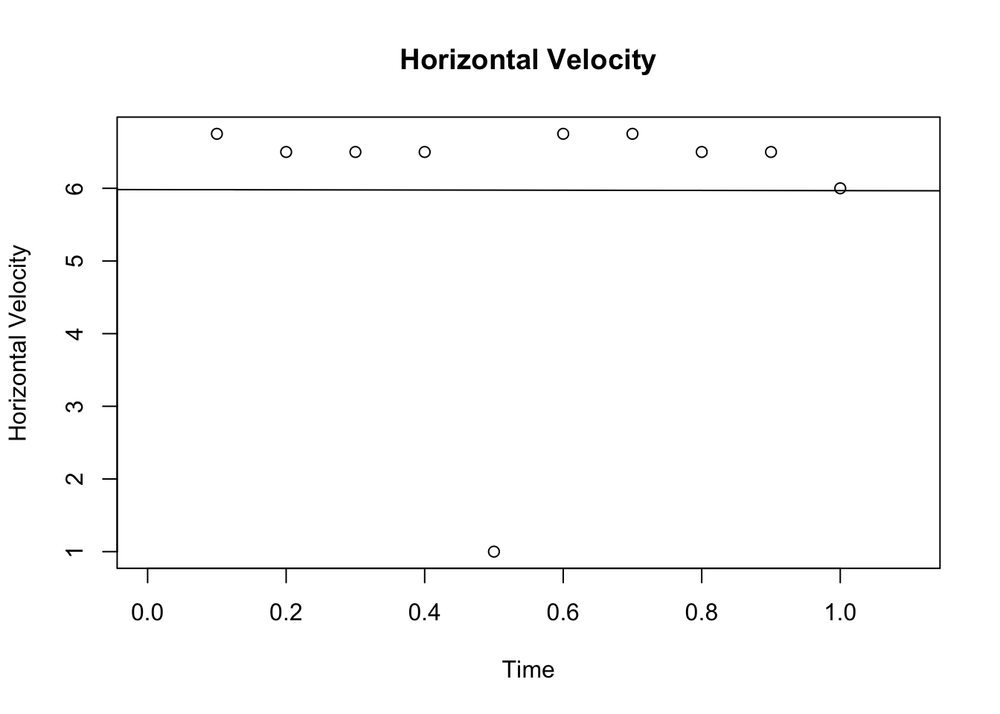
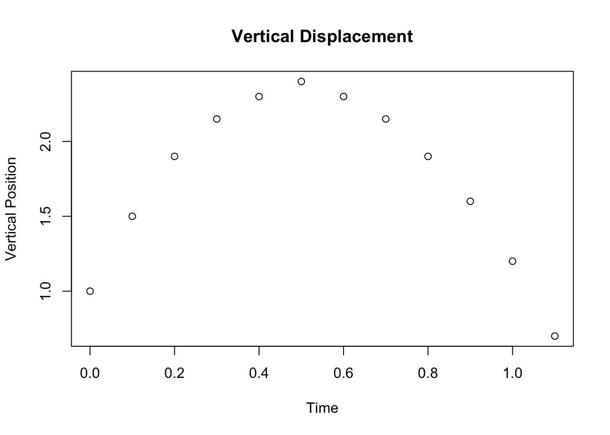
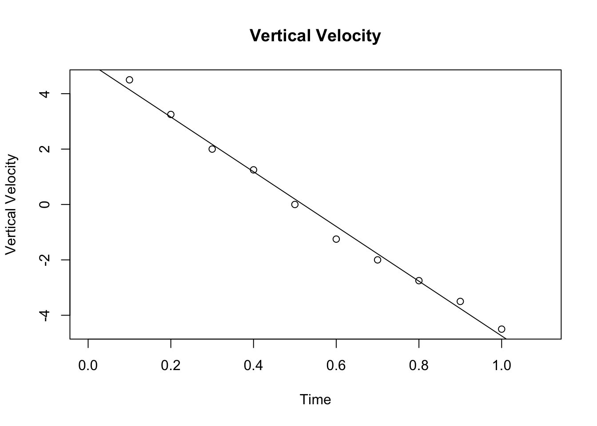

Chapter 4 Lab 4: Three Views of Projectile Ball
4.1 Data
## t x vx y vy
## 1 0.0 0.00 NA 1.00 NA
## 2 0.1 0.70 6.75 1.50 4.50
## 3 0.2 1.35 6.50 1.90 3.25
## 4 0.3 2.00 6.50 2.15 2.00
## 5 0.4 2.65 6.50 2.30 1.25
## 6 0.5 3.30 1.00 2.40 0.00
## 7 0.6 4.00 6.75 2.30 -1.25
## 8 0.7 4.65 6.75 2.15 -2.00
## 9 0.8 5.30 6.50 1.90 -2.75
## 10 0.9 5.95 6.50 1.60 -3.50
## 11 1.0 6.50 6.00 1.20 -4.50
## 12 1.1 NA NA 0.70 NAxt <- lm(x~t, data)
plot(t,x, xlab="Time", ylab="Horizontal Position", main = "Horizontal Displacement")
abline(xt)
## Estimate Std. Error t value Pr(>|t|)
## (Intercept) 0.03636364 0.02044051 1.778998 1.089484e-01
## t 6.54545455 0.03455077 189.444532 1.618403e-17\[ v_x = 6.545 \pm 0.035 \frac{m}{s} \]
vt <- lm(vx~t, data)
plot(t,vx, xlab="Time", ylab="Horizontal Velocity", main = "Horizontal Velocity")
abline(vt)
## Estimate Std. Error t value Pr(>|t|)
## (Intercept) 5.98333333 1.276445 4.687497916 0.001566592
## t -0.01515152 2.057177 -0.007365196 0.994303830\[ a = -0.015 \pm 2.057 \frac{m}{s^2} \]

vyt <- lm(vy~t, data)
plot(t,vy, xlab="Time", ylab="Vertical Velocity", main = "Vertical Velocity")
abline(vyt)
## Estimate Std. Error t value Pr(>|t|)
## (Intercept) 5.133333 0.1851835 27.72025 3.094896e-09
## t -9.878788 0.2984502 -33.10028 7.571623e-10\[ v_o = 5.133 \pm 0.185 \frac{m}{s} \]
\[ g = -9.879 \pm 0.298 \frac{m}{s^2} \]